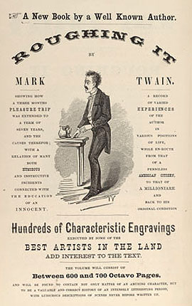

Reviews of
Roughing It

Utica Morning Herald
St. Louis Missouri Democrat
Manchester Guardian
Hartford Courant
[Charles Dudley Warner]
Cincinnati Gazette
London Examiner
New York Independent
San Francisco Call
[B. B. Toby]
Boston Evening Transcript
[Joseph E. Babson]
Sacramento Union
Atlantic Monthly
[W. D. Howells]
Overland Monthly
San Francisco Evening Bulletin
New York Tribune
[George Ripley]
QUOTATIONS USED IN THE REVIEWS